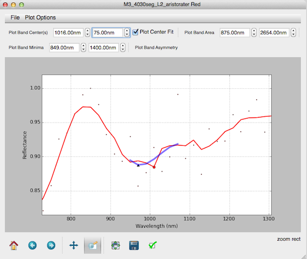
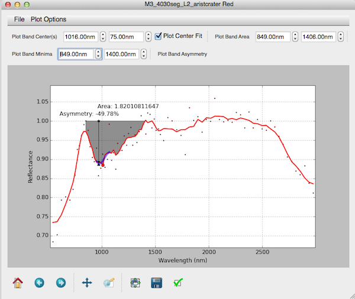
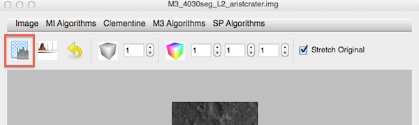
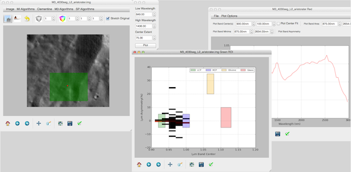

Band Characerization
Once a spectra has been extracted and continuum corrected, PySAT provides the tools to perform band characterization as described by (Horgan citation here).
Continuum Correct
We envision that this is a multi-step process that begins with continuum correcting the spectra. In the figure below, we utilize the polynomial continuum correction method (Horgan) with limits at 875nm, 1530nm, and 2654nm. The search window is set to 200nm and the algorithm finds the local maxima within 200nm of the provided limits.

Smoothed Spectra
For this example, we have (1) selected an interesting looking reflectance, (2) identified likely limits as spikes in the reflectance, (3) continuum corrected the spectra, (4) smooth the spectra with a distance 5 box filter, and (4) plotted the original spectra as points. The remainder of the analysis will use the smoothed spectra.
Band Minima -> Band Center
Next, we wish to identify the band center. To do this, we first quantitatively identify the band minima. In this example, the 1um absorption band is targeted.
To do this we set the limits within which PySAT will search for the minima.

Selecting a spectra
PySAT does not implicitly apply a continuum correction to a spectra. The user must select a spectra to characterize.
PySAT then plots the minima as a dot. Mousing over the dot allows the user to identify the x,y coordinates of the point.

Band Center
Next, we plot the band center as a minima of a third order polynomial centered on the point of our choice (normally the band minima) extending to a user defined extent (75nm in this case). Zooming in, the band center and fit are plotted.

Band Area
Band area is plotted next as the area under 1 between the two continuum limits (849nm and 1406nm).
Specifying band limits
Throughout this page, band limits are being specified that do not map exactly to the bands within the M3 dataset. When a wavelength is not an exact match, PySAT selects the wavelength closest to the user specified wavelength.

Band Asymmetry
Finally, we plot the band asymmetry as $Area_{left} - Area_{right} / Area_{Total}$ (cite Horgan).
Text Annotation Locations
PySAT tries to place text annotation to avoid overlaps. The algorithm to do this is naive (anotation placement is a wonderful topic in its own right). Therefore, all annotations can be dragged around. Note tht if you drag twice, the annotation resets to the original position. A ticket has been filed with MatPlotLib to fix this in future releases.

2D Histogram
Under Development
While this functionality is coded, generating 2d histograms has proven difficult due to the parameterization of each component. Therefore, please use this functionlaity ONLY for testing. Do NOT trust the results (yet) for scientific interpretation.
Within a map plot window, the 2d histogram allows users to plot band center (x) against band asymmetry (y) as described in (cite Horgan). Simply click the button to active, and draw a Region of Interest (ROI) on the map.

Parameterization
This opens a small dial where the low and high wavelength are selected. These are the bounds use to compute the band minima and band area. PySAT computes the band center (necessary for asymmetry) using the band minima and the user supplied extent (75nm in this example). Continuum correcton parameters are drawn from the Continuum Type and Continuum Limits docks.

Plotting
Finally, by clicking Plot, the 2d histogram is computed.
Compute Times
Each pixel within the ROI is read into memory (as a block), continuum corrected (as a series of vectors), and then the necesasry characterizations are computed. If the ROI is large, this can be compute intensive.

Colorbar
A future enhancement will include the addition of a colorbar and color ramp selection to provide more insight into bin counts.